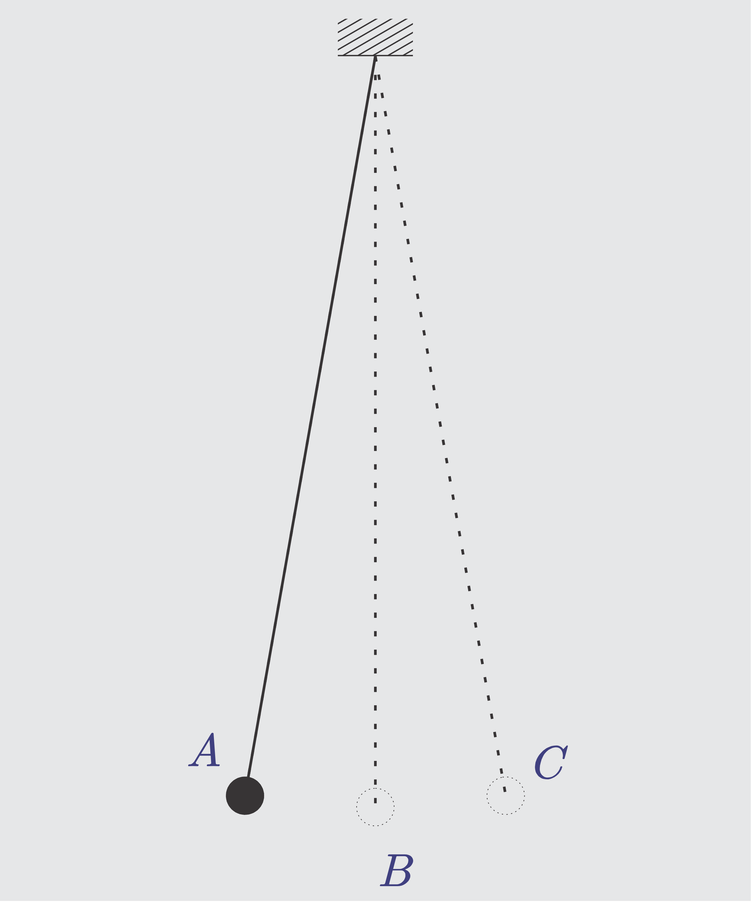
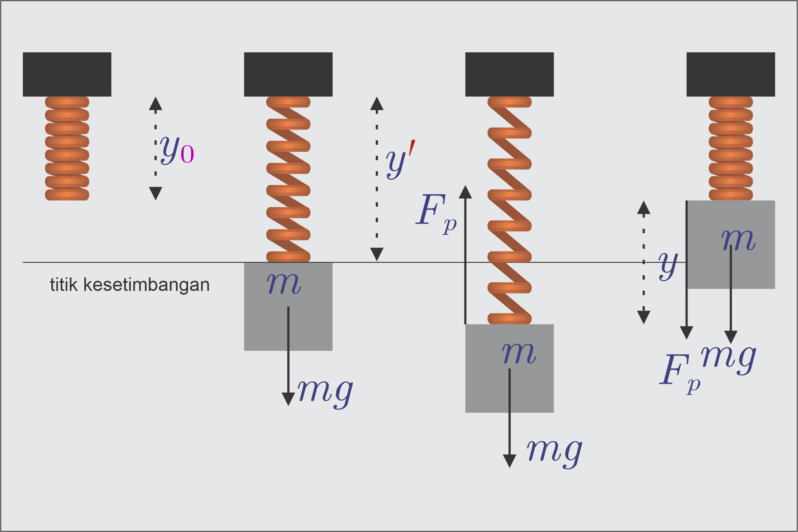
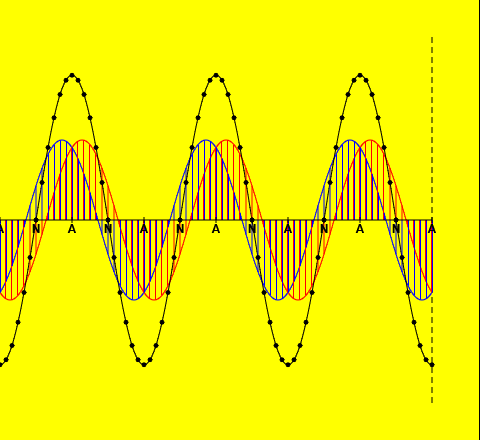

# Getaran dan Gelombang --- 1. Gerak Harmonik Sederhana 2. Gelombang Berjalan 3. Gelombang Berdiri/Stasioner 4. Gelombang Bunyi --- ## Gerak Harmonis Sederhana --- - *Gerak Harmonik/Gerak Periodik*: Gerak bolak-balik di sekitar titik kesetimbangan, atau gerak yang berulang dalam selang waktu yang sama. - Contoh: pohon tertiup angin, perahu diombang-ambing ombak, bandul, ayunan, pegas, dll. - Di alam, umumnya yang ada adalah gerak harmonik teredam, yang akhirnya akan berhenti, entah karena gesekan atau energi berubah menjadi bentuk lain. ---  ---  --- ### Konsep-konsep dalam GHS - **Titik kesetimbangan**: titik diam di mana resultan gaya yang bekerja sama dengan nol. - **Simpangan** (*x* atau *y*): Perpindahan yang ditempuh benda diukur dari titik kesetimbangan. - **Amplitudo** (*A*): Simpangan terjauh (maksimal). - **Periode** (*T*): Waktu untuk menempuh satu getaran/gelombang penuh (s). - **Frekuensi** (*f* atau *$\nu$*): jumlah getaran/gelombang per detik (Hz). --- - **Gaya Pemulih**: Gaya yang membuat benda bergerak harmonis atau gaya yang selalu membawa benda ke titik kesetimbangannya. --- ### Karakteristik GHS ##### 1. Hubungan Periode, Frekuensi dan Frekuensi Sudut ###### $$f=\frac 1 T$$ ###### $$\omega=2\pi f=\frac {2\pi} T $$ Keterangan: - *f* = Frekuensi (Hz) ; *T* = Periode (s) - *𝜔* = Frekuensi sudut (rad/s) --- ##### 2. Simpangan dan Amplitudo - Simpangan bernilai positif bila benda di kanan atau atas dan negatif bila di kiri atau bawah. - Amplitudo selalu bernilai positif. --- ##### 3. Kecepatan dan Percepatan - Kecepatan dan percepatan bernilai positif bila ke arah kanan atau atas dan negatif bila ke arah kiri atau bawah. - Kecepatan bernilai maksimal saat benda berada di titik kesetimbangan, dan nol saat benda di simpangan terjauh. - Percepatan bernilai nol saat benda berada di titik kesetimbangan, dan maksimal saat benda di simpangan terjauh. --- ##### 4. Gaya Pemulih, Energi Kinetik dan Energi Potensial - Gaya Pemulih bernilai positif bila ke arah kanan atau atas dan negatif bila ke arah kiri atau bawah. Arahnya selalu sama dengan percepatan dan berlawanan dengan arah kecepatan benda. - Saat benda di titik kesetimbangan, Energi Kinetik maksimal dan Energi Potensial nol. - Saat benda di simpangan terjauh, Energi Kinetik nol dan Energi Potensial maksimal. --- ### Persamaan Simpangan ##### 1. Sistem Pegas Horisontal - Salah satu gerak harmonik sederhana yang sudah kita kenal adalah pergerakan benda yang dilekatkan pada sebuah pegas. Dalam keadaan setimbang, tidak ada gaya yang bekerja. Namun, ketika pegas diberi gaya (entah dengan didorong atau ditarik untuk pegas horizontal, dan diberi beban untuk pegas vertikal), pegas dan benda akan berpindah dari keadaan setimbangnya. --- - Ketika benda bergerak sejauh 𝑥 dari keadaan setimbang, pegas akan mengerjakan gaya yang besarnya *$-kx$*, sebagaimana dinyatakan oleh Hukum Hooke: ###### $$F_x=−kx$$ Dengan 𝑘 = konstanta pegas. - Tanda negatif menunjukkan bahwa gaya tersebut adalah gaya pemulih, yang berlawanan arah dengan perpindahan dari titik kesetimbangan. Dengan mengingat Hukum II Newton, maka besar percepatannya: --- ###### $$a_x=\frac F m=-\frac{kx}{m}$$ - Dapat dilihat bahwa percepatan benda berbanding lurus dengan perpindahan, tapi berlawanan arah dengannya. Karena itu dapat dikatakan bahwa: Dalam gerak harmonik sederhana, percepatan dan total gaya yang bekerja, *berbanding lurus tapi berlawanan arah* dengan perpindahan benda dari titik kesetimbangan. --- - *$F=−kx$* bukanlah satu-satunya persamaan gaya pemulih. Untuk sistem gerak harmonik sederhana yang lain, harus dipakai persamaan lain. Misalnya, untuk bandul (pendulum) sederhana, dipakai: *$F=−mg\sin\theta$* - Persamaan simpangan diturunkan dari definisi percepatan sebagai turunan kedua dari perpindahan. --- $$a_x=\frac{d^2x}{dt^2}$$ $$-\frac{kx}{m}=\frac{d^2x}{dt^2}$$ ###### $$\frac{d^2x}{dt^2}+\frac{kx}{m}=0$$ --- - Persamaan di atas adalah persamaan diferensial orde kedua, yang memiliki penyelesaian *$x(t)=A\sin(\omega t+\theta_0)$* atau *$x(t)=A\cos(\omega t+\theta_0)$*. Kedua persamaan dapat dipakai, karena *$\cos(\omega t+\theta_0)=\sin(\omega t+\theta_0+\frac{\pi}{2})$*. Jadi dengan menambahkan atau mengurangkan 𝜃<sub>0</sub> dengan 𝜋/2, kedua persamaan itu dapat digunakan. --- ##### Kecepatan dan Percepatan - Kecepatan adalah turunan pertama dari perpindahan atau simpangan, sehingga: $$v_x=\frac{dx}{dt}=\frac{d}{dt}A\sin(\omega t+\theta_0)$$ atau $$v_x=\frac{dx}{dt}=\frac{d}{dt}A\cos(\omega t+\theta_0)$$ --- ###### $$v_x=\omega A\cos(\omega t+\theta_0)$$ atau ###### $$v_x=-\omega A\sin(\omega t+\theta_0)$$ --- - Percepatan adalah turunan pertama dari kecepatan, sehingga: $$a_x=\frac{dv}{dt}=\frac{d}{dt}\omega A\cos(\omega t+\theta_0)$$ atau $$a_x=\frac{dv}{dt}=\frac{d}{dt}-\omega A\sin(\omega t+\theta_0)$$ --- ###### $$a_x=-\omega^2 A\sin(\omega t+\theta_0)=-\omega^2x$$ atau ###### $$a_x=-\omega^2 A\cos(\omega t+\theta_0)=-\omega^2x$$ --- ##### Frekuensi dan Frekuensi Sudut - Dari persamaan *$F_x=−kx$* dan *$a_x=-\omega^2x$*, dapat diperoleh: $$a_x=\frac{-kx}m=-\omega^2x$$ $$\omega^2=\frac{k}m$$ ###### $$\omega=\sqrt{\frac k m}$$ --- ##### Energi Kinetik dan Energi Potensial - Dalam gerak harmonik sederhana, energi kinetik dan energi potensialnya selalu berubah sebagai fungsi waktu. Namun jumlah keduanya (energi mekanik), *$E_M=E_K+E_P$* selalu tetap. $$dE_P=-F.dl$$ $$E_P=\int^{l}_{0} F.dl$$ --- ###### $$E_P=\frac 1 2 kx^2=\frac 1 2 kA^2\cos^2(\omega t+\theta_0)$$ ###### $$E_K=\frac 1 2 mv^2=\frac 1 2 m\omega^2A^2\sin^2(\omega t+\theta_0)$$ ###### $$E_K=\frac 1 2 kA^2\sin^2(\omega t+\theta_0)$$ --- ###### $$\begin{split}E_M&=E_K+E_P \cr &=\frac 1 2 kA^2\cos^2(\omega t+\theta_0)+\frac 1 2 kA^2\sin^2(\omega t+\theta_0) \cr &=\frac 1 2 kA^2\end{split}$$ --- ##### 2. Sistem Pegas Vertikal - Gaya Pemulih **$F_y=−ky+mg$** - Persamaan Simpangan **$y(t)=A\sin(\omega t+\theta_0)$** atau **$y(t)=A\cos(\omega t+\theta_0)$** - Kecepatan **$v_y=\omega A\cos(\omega t+\theta_0)$** atau **$v_y=-\omega A\sin(\omega t+\theta_0)$** - Percepatan **$a_y=-\omega^2 A\sin(\omega t+\theta_0)=-\omega^2y$** atau **$a_y=-\omega^2 A\cos(\omega t+\theta_0)=-\omega^2y$** - Energi Kinetik **$E_K=\frac 1 2 mv^2$** dan Energi Potensial **$E_P=\frac 1 2 ky^2$** - Frekuensi Sudut **$\omega=\sqrt{\frac k m}$** --- ##### 2. Sistem Bandul - Gaya Pemulih **$F=-mg\sin\Phi\approx-mg\Phi$**, dengan *Φ* adalah sudut simpangan. - Persamaan Simpangan **$\Phi(t)=\Phi_0\sin(\omega t+\theta_0)$** atau **$\Phi(t)=\Phi_0\cos(\omega t+\theta_0)$** - Kecepatan sudut **$\vec {\boldsymbol\omega}=\omega \Phi_0\cos(\omega t+\theta_0)$** atau **$\vec {\boldsymbol\omega}=-\omega \Phi_0\sin(\omega t+\theta_0)$** dengan *Φ<sub>0</sub>* adalah simpangan maksimal - Kecepatan **$v=\omega \Phi_0 l\cos(\omega t+\theta_0)$** atau **$v=-\omega \Phi_0 l\sin(\omega t+\theta_0)$** dengan *l* adalah panjang tali --- - Percepatan sudut **$\alpha=\frac{\tau}{I}=\frac{-mg\Phi l}{I}$** dengan *τ* adalah torsi dan *I* adalah momen inersia bandul (*$I=ml^2$*) - Percepatan **$a=\frac{F}{m}=\frac{-mg\Phi}{m}=-g\Phi$** - Energi Kinetik **$E_K=\frac 1 2 I\vec {\boldsymbol\omega}^2$** dan Energi Potensial **$E_P=mgl(1−\cos\Phi) $** - Frekuensi Sudut **$\omega=\sqrt{\frac g l}$** --- Keterangan: - *x* atau *y*: Simpangan (m) - *A*: Amplitudo (m). - *T*: Periode (s). - *f*: Frekuensi (Hz). - *θ* = Simpangan sudut (rad) --- ## Gelombang Berjalan - Gejala mengenai gerak gelombang banyak kita jumpai sehari-hari. Kita tentu mengenal gelombang yang dihasilkan oleh sebuah benda yang dijatuhkan ke dalam air, sebab hal itu mudah kita amati. Di dalam perambatannya ada gelombang yang memerlukan medium perantara, misalnya gelombang air, gelombang bunyi. Tetapi ada juga yang tidak memerlukan medium perantara, misalnya gelombang cahaya dan gelombang elektromagnet. --- - Yang akan kita bahas hanyalah gelombang di dalam medium yang lenting yang disebut *Gelombang Mekanis*. Karena sifat kelentingan dari medium maka gangguan keseimbangan ini dirambatkan ke titik lainnya. Jadi gelombang adalah usikan yang merambat dan gelombang yang bergerak akan merambatkan energi (tenaga). --- #### Sifat Umum Gelombang - dapat dipantulkan (refleksi) - dapat dibiaskan (refraksi) - dapat dipadukan (interferensi) - dapat dilenturkan (difraksi) - dapat dipolarisasikan (diserap arah getarnya) --- - Berdasarkan arah getaran partikel terhadap arah perambatan gelombang dapat dibedakan menjadi: **Gelombang Transversal** dan **Gelombang Longitudinal**. - Gelombang Transversal adalah gelombang yang arah perambatannya tegak lurus pada arah getaran partikel. (gelombang pada tali, gelombang permukaan air, gelombang elektromagnetik). - Gelombang Longitudinal adalah gelombang yang arah perambatannya searah dengan arah getaran partikel.(gelombang pada pegas, gelombang bunyi) --- - Bila sebuah partikel yang bergetar menggetarkan partikel-partikel lain yang berada di sekitarnya, berarti getaran itu merambat. Getaran yang merambat disebut Gelombang Berjalan. Jarak yang ditempuh getaran dalam satu periode disebut Panjang Gelombang (*λ*) dan waktu untuk menempuh satu panjang gelombang disebut periode (*T*). Bila cepat rambat gelombang (*v*) dan periode getarannya T maka: --- ###### $$\lambda=vT$$ atau ###### $$\lambda=\frac v f$$ --- <iframe type="text/html" src="https://phet.colorado.edu/sims/html/wave-on-a-string/latest/wave-on-a-string_all.html" width="1000px" height="681px"> --- - Bila dari sebuah titik P merambat getaran yang amplitudonya *A*, periodenya *T* dan cepat rambatnya *v*, simpangannya pada saat *t* adalah **$y_P=A\sin\omega t$** - Di titik Q, yang berjarak *x* dari P, ketika P telah bergetar selama t sekon, titik Q baru bergetar selama $(t-\frac x v)$. - Simpangan Q saat itu adalah ###### $$y_Q=A\sin\omega (t-\frac x v)$$ - Inilah persamaan gelombang berjalan. --- - Perbedaan fase antara titik P dan Q adalah $$\Delta\phi=\frac t T-\frac{t-\frac x v}{T}$$ ###### $$\Delta\phi=\frac x {\lambda}$$ --- - Persamaan $y_Q=A\sin\omega (t-\frac x v)$ dapat juga ditulis sebagai *$y_Q=A\sin 2\pi(\frac t T-\frac x \lambda)$*. Jika kita menetapkan suatu konstanta *k* yang besarnya *$\frac {2\pi}{\lambda}$*, Persamaan di atas menjadi ###### $$y_Q=A\sin (\omega t-kx)$$ --- Keterangan: - *A* = Amplitudo getaran di titik asal (m) - *t* = Lama titik asal telah bergetar (s) - *k* = Bilangan gelombang (m<sup>-1</sup>) - *𝜔* = Frekuensi sudut (rad/s) - *x* = jarak titik Q dari titik asal (m) - *y<sub>Q</sub>* = simpangan getaran di titik Q (m) --- - Secara umum, persamaan simpangan getaran di suatu titik sembarang pada tali (misal titik Q), yang berjarak x dari titik asal getaran ada dua bentuk yaitu: ###### $$y_Q=\pm A\sin (\omega t\pm kx)$$ - Amplitudo positif berarti permulaan getar ke atas dan sebaliknya. - *kx* positif berarti gelombang merambat ke kanan dan sebaliknya. --- ##### Kecepatan dan Percepatan - Kecepatan adalah turunan pertama dari perpindahan atau simpangan, sehingga: $$v_y=\frac{dy}{dt}=\frac{d}{dt}\pm A\sin (\omega t\pm kx)$$ ###### $$v_y=\pm\omega A\cos (\omega t\pm kx)$$ --- - Percepatan adalah turunan pertama dari kecepatan, sehingga: $$a_y=\frac{dv}{dt}=\frac{d}{dt}\pm\omega A\cos (\omega t\pm kx)$$ ###### $$a_y=\mp\omega^2 A\sin(\omega t\pm kx)=-\omega^2y$$ --- ## Gelombang Stasioner - Pada proses pantulan gelombang, terjadi gelombang pantul yang mempunyai amplitudo dan frekuensi yang sama dengan gelombang datangnya, hanya saja arah rambatannya yang berlawanan. hasil interferensi (perpaduan) dari kedua gelombang tersebut disebut **Gelombang Stasioner** atau **Gelombang Diam**. --- <iframe type="text/html" src="https://phet.colorado.edu/sims/html/wave-on-a-string/latest/wave-on-a-string_all.html" width="1000px" height="681px"> --- <a href="https://www.walter-fendt.de/html5/phen/standingwavereflection_en.htm" target="_blank"></a> --- ### 1.Pantulan Ujung Bebas - Selisih fase gelombang datang dan gelombang pantul di ujung bebas adalah 0, jadi *$\Delta\phi=0$*. Ini berarti bahwa fase gelombang datang sama dengan fase gelombang pantul. Andaikan *L* adalah panjang tali dan *x* adalah jarak titik C yang teramati terhadap titik pantul pada ujung bebas, yaitu titik B. Jika A digetarkan, maka persamaan simpangan di A adalah: ###### $$y_A=A\sin\Big(\frac {2\pi} T t_A\Big)$$ --- - Titik C yang berjarak *x* dari ujung bebas B, mengalami getaran gelombang dari hasil interferensi (perpaduan) dari kedua gelombang. Pertama, dari *Gelombang datang* yaitu apabila A telah bergetar t detik, maka tentulah C menggetar kurang dari t sekon, selisih waktu tersebut adalah sebesar *$\frac{L-x} v$* sehingga *$t_{C1}=t_A-\frac{L-x} v$* dan persamaan di C menjadi: --- $$y_{C1}=A\sin \frac {2\pi} T\Big(t_A-\frac{L-x} v\Big)$$ $$y_{C1}=A\sin 2\pi\Big(\frac{t_A} T-\frac{L-x} {vT}\Big)$$ ###### $$y_{C1}=A\sin 2\pi\Big(\frac{t_A} T-\frac{L-x} {\lambda}\Big)$$ --- - Kedua, dari *Gelombang pantul*. Rambatan gelombang telah menempuh jarak *$(L+x)$*, sehingga beda waktunya menjadi *$\frac{L+x} v$* detik, maka *$t_{C2}=t_A-\frac{L+x} v$* detik. Maka persamaan simpangan di C menjadi: --- $$y_{C2}=A\sin \frac {2\pi} T\Big(t_A-\frac{L+x} v\Big)$$ $$y_{C2}=A\sin 2\pi\Big(\frac{t_A} T-\frac{L+x} {vT}\Big)$$ ###### $$y_{C2}=A\sin 2\pi\Big(\frac{t_A} T-\frac{L+x} {\lambda}\Big)$$ --- - Hasil superposisi kedua gelombang adalah: $$\begin{split}y_{C}&=y_{C1}+y_{C2}\cr &=A\sin 2\pi\Big(\frac{t_A} T-\frac{L-x} {\lambda}\Big)+A\sin 2\pi\Big(\frac{t_A} T-\frac{L+x} {\lambda}\Big)\cr &=A2\sin 2\pi\frac 1 2 \Big(\frac{2t_A} T-\frac{2L}{\lambda}\Big)\cos 2\pi\frac 1 2\Big(\frac{2x}{\lambda}\Big)\end{split}$$ ###### $$y_{C}=2A\cos 2\pi\Big(\frac{x}{\lambda}\Big)\sin 2\pi\Big(\frac{t_A} T-\frac{L} {\lambda}\Big)$$ --- - Persamaan di atas dapat dianggap sebagai persamaan getaran harmonik sederhana dengan amplitudo *$2A\cos 2\pi\Big(\frac{x}{\lambda}\Big)$* dan tergantung dari tempat titik yang diamati. Karena tidak tergantung waktu ,maka *$A_C=2A\cos 2\pi\Big(\frac{x}{\lambda}\Big)$* sebagai amplitudo gelombang stasioner ujung bebas. --- #### Letak simpul - Karena pada simpul nilai amplitudo adalah nol dan bukan merupakan fungsi waktu (t), maka: $$A_C=2A\cos 2\pi\Big(\frac{x}{\lambda}\Big)=0$$ $$\cos 2\pi\Big(\frac{x}{\lambda}\Big)=0$$ $$2\pi\Big(\frac{x}{\lambda}\Big)=\Big(\frac{2n-1}{2}\Big)\pi$$ --- ###### $$2x=(2n-1)\frac {\lambda} 4$$ dengan (n = 1,2,3,4,….). Dengan demikian jarak simpul ke titik pantul bebas adalah: *$(2n-1)\frac {\lambda} 4$*, dengan n = bilangan asli --- #### Letak perut - Tempat-tempat yang menyatakan perut mempunyai harga amplitudo yang maksimum, jadi: $$A_C=2A\cos 2\pi\Big(\frac{x}{\lambda}\Big)=\pm 2A$$ $$\cos 2\pi\Big(\frac{x}{\lambda}\Big)=\pm 1$$ $$2\pi\Big(\frac{x}{\lambda}\Big)=(n-1)\pi$$ --- ###### $$x=(n-1)\frac {\lambda} 2$$ dengan (n = 1,2,3,4,….). Dengan demikian jarak perut ke titik pantul bebas adalah: *$x=(n-1)\frac {\lambda} 2$*, dengan n = bilangan asli. --- ### 1.Pantulan Ujung Terikat - Selisih fase gelombang datang dan gelombang pantul di ujung terikat adalah 1/2, jadi *$\Delta\phi=\frac 1 2$*. Ini berarti bahwa fase gelombang datang berlawanan dengan fase gelombang pantul. Andaikan *L* adalah panjang tali dan *x* adalah jarak titik C yang teramati terhadap titik pantul pada ujung terikat, yaitu titik B. Jika A digetarkan, maka persamaan simpangan di A adalah: ###### $$y_A=A\sin\Big(\frac {2\pi} T t_A\Big)$$ --- - Titik C yang berjarak *x* dari ujung terikat B, mengalami getaran gelombang dari hasil interferensi (perpaduan) dari kedua gelombang. Pertama, dari *Gelombang datang* yaitu apabila A telah bergetar t detik, maka tentulah C menggetar kurang dari t sekon, selisih waktu tersebut adalah sebesar *$\frac{L-x} v$* sehingga *$t_{C1}=t_A-\frac{L-x} v$* dan persamaan di C menjadi: --- $$y_{C1}=A\sin \frac {2\pi} T\Big(t_A-\frac{L-x} v\Big)$$ $$y_{C1}=A\sin 2\pi\Big(\frac{t_A} T-\frac{L-x} {vT}\Big)$$ ###### $$y_{C1}=A\sin 2\pi\Big(\frac{t_A} T-\frac{L-x} {\lambda}\Big)$$ --- - Kedua, dari *Gelombang pantul*. Rambatan gelombang telah menempuh jarak *$(L+x)$*, sehingga beda waktunya menjadi *$\frac{L+x} v$* detik, maka *$t_{C2}=t_A-\frac{L+x} v$* detik. Maka persamaan simpangan di C menjadi: --- $$y_{C2}=A\sin \frac {2\pi} T\Big(t_A-\frac{L+x} v+\pi\Big)$$ $$y_{C2}=A\sin 2\pi\Big(\frac{t_A} T-\frac{L+x} {vT}+\pi\Big)$$ ###### $$y_{C2}=A\sin 2\pi\Big(\frac{t_A} T-\frac{L+x} {\lambda}+\pi\Big)$$ ###### $$y_{C2}=-A\sin 2\pi\Big(\frac{t_A} T-\frac{L+x} {\lambda}\Big)$$ --- - Hasil superposisi kedua gelombang adalah: $$\begin{split}y_{C}&=y_{C1}+y_{C2}\cr &=A\sin 2\pi\Big(\frac{t_A} T-\frac{L-x} {\lambda}\Big)-A\sin 2\pi\Big(\frac{t_A} T-\frac{L+x} {\lambda}\Big)\cr &=A2\cos 2\pi\frac 1 2 \Big(\frac{2t_A} T-\frac{2L}{\lambda}\Big)\sin 2\pi\frac 1 2\Big(\frac{2x}{\lambda}\Big)\end{split}$$ ###### $$y_{C}=2A\sin 2\pi\Big(\frac{x}{\lambda}\Big)\cos 2\pi\Big(\frac{t_A} T-\frac{L} {\lambda}\Big)$$ --- - Persamaan di atas dapat dianggap sebagai persamaan getaran harmonik sederhana dengan amplitudo *$2A\sin 2\pi\Big(\frac{x}{\lambda}\Big)$* dan tergantung dari tempat titik yang diamati. Karena tidak tergantung waktu ,maka *$A_C=2A\sin 2\pi\Big(\frac{x}{\lambda}\Big)$* sebagai amplitudo gelombang stasioner ujung terikat. --- #### Letak simpul - Karena pada simpul nilai amplitudo adalah nol dan bukan merupakan fungsi waktu (t), maka: $$A_C=2A\sin 2\pi\Big(\frac{x}{\lambda}\Big)=0$$ $$\sin 2\pi\Big(\frac{x}{\lambda}\Big)=0$$ $$2\pi\Big(\frac{x}{\lambda}\Big)=(n-1)\pi$$ --- ###### $$x=(n-1)\frac {\lambda} 2$$ dengan (n = 1,2,3,4,….). Dengan demikian jarak simpul ke titik pantul terikat adalah: *$x=(n-1)\frac {\lambda} 2$*, dengan n = bilangan asli --- #### Letak perut - Tempat-tempat yang menyatakan perut mempunyai harga amplitudo yang maksimum, jadi: $$A_C=2A\sin 2\pi\Big(\frac{x}{\lambda}\Big)=\pm 2A$$ $$\sin 2\pi\Big(\frac{x}{\lambda}\Big)=\pm 1$$ $$2\pi\Big(\frac{x}{\lambda}\Big)=\Big(\frac{2n-1}{2}\Big)\pi$$ --- ###### $$x=(2n-1)\frac {\lambda} 4$$ dengan (n = 1,2,3,4,….). Dengan demikian jarak perut ke titik pantul terikat adalah: *$x=(2n-1)\frac {\lambda} 4$*, dengan n = bilangan asli. --- Jadi untuk gelombang stasioner/gelombang diam, - Ujung Bebas ###### $$y_{C}=2A\cos 2\pi\Big(\frac{x}{\lambda}\Big)\sin 2\pi\Big(\frac{t_A} T-\frac{L} {\lambda}\Big)$$ Amplitudo = ###### $$y_{C}=2A\cos 2\pi\Big(\frac{x}{\lambda}\Big)$$ - Ujung Terikat ###### $$y_{C}=2A\sin 2\pi\Big(\frac{x}{\lambda}\Big)\cos 2\pi\Big(\frac{t_A} T-\frac{L} {\lambda}\Big)$$ Amplitudo = ###### $$y_{C}=2A\sin 2\pi\Big(\frac{x}{\lambda}\Big)$$ --- Keterangan: - *A* = Amplitudo (m) - *t<sub>A</sub>* = Lama titik asal telah bergetar (s) - *L* = panjang tali (m) - *𝜔* = Frekuensi sudut (rad/s) - *x* = jarak titik C dari ujung tali (m) - *λ* = panjang gelombang (m) - *y<sub>C</sub>* = simpangan di titik C (m) --- ## Gelombang Bunyi - Gelombang bunyi merupakan salah satu bentuk gelombang mekanis longitudinal, dan mungkin merupakan yang terpenting. - Gelombang bunyi dapat merambat melalui perantara apa pun, dengan kecepatan rambat tergantung pada sifat perantara itu. - Ketika gelombang bunyi merambat, partikel pada medium/perantara, bergetar dalam bentuk rapatan dan renggangan, sepanjang arah rambat gelombang bunyi. --- Gelombang bunyi dibagi dalam tiga kategori. 1. Gelombang *audiosonik*, atau gelombang yang dapat didengar manusia. Rentang frekuensinya antara 20-20.000 Hertz. 2. Gelombang *infrasonik*, yaitu gelombang yang frekuensinya di bawah ambang pendengaran manusia. 3. Gelombang *ultrasonik*, yaitu gelombang yang frekuensinya di atas ambang pendengaran manusia. --- Cepat Rambat Gelombang Bunyi - Cepat rambat gelombang bunyi pada berbagai medium tergantung pada banyak faktor. - Di antaranya adalah: kelembaman (inertia), suhu, dan massa jenis. --- Cepat rambat bunyi pada beberapa medium | **Medium** | **Kecepatan rambat bunyi (m/s)** | |---|---| | Udara (0 °C) | 331 | | Udara (100 °C) | 386 | | Air | 1490 | | Air Laut | 1530 | | Alumunium | 5100 | | Besi | 5130 | --- #### Cepat rambat bunyi pada zat padat - Pada benda padat, cepat rambat bunyi dihitung dengan akar perbandingan modulus elastistas (*E*) terhadap massa jenis (*ρ*) bahan tersebut, menggunakan persamaan berikut. ###### $$v=\sqrt{\frac{E}{\rho}}$$ Dengan : - *E* = modulus elastisitas (N/m<sup>2</sup>), - *ρ* = massa jenis bahan (kg/m<sup>3</sup>). --- #### Cepat rambat bunyi pada benda cair - Pada benda cair, cepat rambat bunyi dipengaruhi oleh modulus Bulk (B) dan massa jenis (ρ) benda yang ditunjukkan dengan persamaan: ###### $$v=\sqrt{\frac{B}{\rho}}$$ Dengan : - *B* = modulus bulk = ukuran elastisitas bahan pada satuan volume(N/m<sup>2</sup>), - *ρ* = massa jenis zat cair (kg/m<sup>3</sup>). --- #### Cepat rambat bunyi pada gas - Pada gas, kecepatan molekul dipengaruhi oleh suhu, semakin cepat molekul bergerak maka bunyi akan semakin cepat untuk dirambatkan. Adapun modulus Bulk pada udara akan bergantung pada tekanan dan keadaan adibatik yang ditunjukkan dengan persamaan berikut. ###### $$B=\gamma P$$ Dengan : - *γ* = konstanta Laplace - *p* = tekanan (N/m<sup>2</sup>) --- - Dari persamaan gas ideal, kita tahu bahwa ###### $$PV=nRT$$ atau $$P=\frac{mRT}{MV}=\frac{\rho RT}{M}$$ sehingga --- ###### $$v=\sqrt{\frac{B}{\rho}}=\sqrt{\frac{\gamma P}{\rho}}=\sqrt{\frac{\gamma RT}{M}}$$ Dengan : - *R* = tetapan gas dengan nilai 8.31 J/mol.K - *M* = massa molar gas (kg/mol) - *T* = suhu (K) --- ### Sumber Bunyi #### Sumber bunyi dawai - Pada waktu kita memetik dawai/senar, kita akan menghasilkan gelombang stasioner dengan ujung terikat yang merupakan hasil superposisi gelombang. - Nada dasar adalah nada dengan panjang gelombang 1/2 λ dan nada atas pertama adalah nada dengan panjang gelombang 1 λ. Pola ini akan terus naik dengan beda 1/2 λ. --- - Besarnya ferkuensi nada ke-n (*$f_n$*) pada dawai dapat dinyatakan dengan persamaan berikut. ###### $$f_n=\frac{v}{\lambda_n}=\frac{n}{2 L}v$$ Dengan : - *f* = frekuensi (Hz), - *v* = cepat rambat gelombang bunyi (m/s), - *λ<sub>n</sub>* = panjang gelombang bunyi (m), - *L* = panjang dawai (m), - *n* = 1,2,3… --- - Adapun cepat rambat bunyi (*v*) pada dawai tergantung kepada tegangan dawai (*F*), massa dawai (*m*) dan panjang dawai (*L*), yang secara matematis dapat dinyatakan dengan persamaan berikut. ###### $$v=\sqrt{\frac{F}{A\rho}}=\sqrt{\frac{FL}{m}}$$ --- #### Sumber bunyi pipa organa - Seruling, terompet dan alat musik tiup lain memanfaatkan kolom udara yang ditiup sehingga udara yang bergetar akan menghasilkan suara yang teratur. Kolom tempat udara bergetar disebut pipa organa. - Terdapat dua jenis pipa organa, yaitu pipa organa terbuka dan pipa organa tertutup. --- ##### Pipa organa terbuka - Pipa organa terbuka merupakan sebuah pipa dengan kolom udara tanpa penutup pada kedua ujungnya. - Sama halnya dengan dawai, frekuensi pada pipa organa dimulai dengan panjang gelombang 1/2 λ dan terus naik dengan beda 1/2 λ, sehingga penentuan frekuensi nada ke-n dapat ditentukan dengan persamaan yang digunakan pada dawai. --- ##### Pipa organa tertutup - Pada pipa organa tertutup, salah satu ujung dari kolom udara pada pipa berada dalam posisi tertutup. - Frekuensi tiap tingkatan nada dapat ditunjukkan dengan persamaan: --- ###### $$f_n=\frac{2n-1}{4 L}v$$ Dengan : - *f* = frekuensi (Hz), - *v* = cepat rambat gelombang bunyi (m/s), - *λ<sub>n</sub>* = panjang gelombang bunyi (m), - *L* = panjang pipa organa (m), - *n* = 1,2,3… --- ### Efek Doppler - Efek Doppler terjadi karena panjang gelombang sumber bunyi akan berubah secara relatif ketika mendekat atau menjauhi pendengar. - Secara umum persamaan efek Doppler dapat dituliskan sebagai berikut: --- ###### $$f_p=\frac{v\pm v_p}{v\pm v_s}f_s$$ Dengan : - *v<sub>p</sub>* = kecepatan gerak pengamat (m/s), - *v<sub>s</sub>* = kecepatan gerak sumber (m/s), - *f<sub>p</sub>* = frekuensi yang didengar pengamat (Hz), - *f<sub>s</sub>* = frekuensi sumber bunyi (Hz) --- - Kecepatan pengamat *v<sub>p</sub>* akan bertanda (+) apabila mendekati sumber dan akan bertanda (-) apabila menjauhi sumber, sedangkan *v<sub>s</sub>* menunjukkan kecepatan gerak sumber, vS akan bertanda (+) apabila menjauhi pengamat dan bertanda (-) apabila mendekati pengamat. --- ### Resonansi - Gelas dan kaca dapat pecah hanya karena gelombang suara. Hal ini disebabkan frekuensi suara tersebut beresonansi dengan frekuensi alami gelas. - Saat material gelas bergetar, susunan bahannya menjadi tidak stabil dan akhirnya pecah. --- - Resonansi adalah proses ikut bergetarnya suatu benda karena frekuensi alaminya sama dengan frekuensi dari suatu sumber bunyi. - Resonansi sering ditemukan dalam fenomena sehari-hari seperti ikut bergetarnya jendela saat terjadi halilintar. - Dalam alat musik seperti gitar terdapat kotak resonansi di mana udara dalam kotak resonansi ikut bergetar saat dawai dipetik. --- ### Pelayangan Bunyi - Bunyi peluit sering kali terdengar melengking tinggi dan lalu melemah. Bunyi melengking yang kita dengar sebenarnya tidak berasal hanya dari satu frekuensi saja, tetapi dari berbagai frekuensi dan seringkali terdengar suaranya pelan kemudian melengking. - Fenomena ini disebut sebagai pelayangan bunyi. Pelayangan bunyi dapat dijelaskan melalui prinsip superposisi gelombang. --- - Kombinasi dari dua gelombang ini disebut dengan interferensi. Saat mendengar suara yang keras, berarti kedua gelombang memiliki beda fase *$nλ$*. Keadaan ini disebut dengan interferensi konstruktif, sedangkan bunyi yang terdengar lemah dikarenakan kedua gelombang memiliki beda fase *$\frac{nλ} 2$*. --- - Adapun persamaan untuk menentukan layangan bunyi adalah: ###### $$f_n=|f_2 − f_1|$$ Dengan : - *f<sub>n</sub>* = frekuensi layangan bunyi (Hz) - *f<sub>1</sub>/f<sub>2</sub>* = frekuensi benda yang berinterferensi (Hz) --- ### Intensitas dan Taraf Intensitas Bunyi - Telinga manusia memiliki batas/ambang pendengaran yang berkisar 10-12 watt/m<sup>2</sup>. Jika kurang dari batas tersebut itu telinga tidak dapat mendengar bunyi dari sumber bunyi. - Ukuran kekuatan dari bunyi dinyatakan dengan istilah Taraf Intensitas Bunyi. --- - Taraf intensitas bunyi merupakan logaritma perbandingan antara intensitas yang diukur dengan intensitas ambang pendengaran, yang secara matematis dapat dinyatakan dengan persamaan sebagai berikut. ###### $$TI=10\log{\frac{I}{I_0}}$$ - Taraf intensitas memiliki satuan desiBel (dB) --- Taraf Intensitas bunyi beserta sumbernya | **Taraf Intensitas** | **Sumber** | |---|---| | 0 dB | Ambang pendengaran manusia | | 10-20 dB | Bisikan Kecil | | 30-40 dB | Perpustakaan | | 50-70 dB | Percakapan sehari-hari | | 70-80 dB | Lalu lintas yang ramai | | 90 dB | Alat pengebor beton | | > 90 dB | Mesin jet |